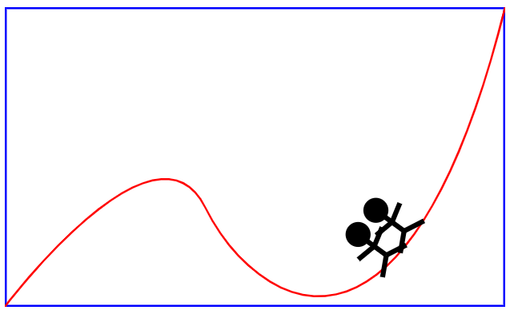

web前端开发
一个XML的简单应用
代码如下：
1 <?xml version="1.0" encoding="utf-8"?>
2
3 <svg width="500" height="300" xmlns="http://www.w3.org/2000/svg">
4 <!---->
5 <rect x="1" y="1" width="498" height="298" fill="none" stroke="blue" stroke-width="2"/>
6 <!-- -->
7 <path d="M0,300 S150,100 200,200 S400,400 500,0" fill="none" stroke="red" stroke-width="2"/>
8 <!---->
9 <g stroke-width="5" stroke="black">
10 <!-- -->
11 <circle cx="0" cy="-45" r="10" fill="black"/>
12 <line x1="-20" y1="-30" x2="0" y2="-25"/>
13 <line x1="20" y1="-30" x2="0" y2="-25"/>
14 <line x1="-20" y1="0" x2="0" y2="-10"/>
15 <line x1="20" y1="0" x2="0" y2="-10"/>
16 <line x1="0" y1="-10" x2="0" y2="-45"/>
17
18 <circle cx="-30" cy="-45" r="10" fill="black"/>
19 <line x1="-50" y1="-30" x2="-30" y2="-25"/>
20 <line x1="-10" y1="-30" x2="-30" y2="-25"/>
21 <line x1="-50" y1="0" x2="-30" y2="-10"/>
22 <line x1="-10" y1="0" x2="-30" y2="-10"/>
23 <line x1="-30" y1="-10" x2="-30" y2="-45"/>
24 <!---->
25 <animateMotion path="M0,300 S150,100 200,200 S400,400 500,0" dur="8s" repeatCount="indefinite" rotate="auto"/>
26 </g>
27
28 </svg>具体请看效果图

HTML5新增常用结构性元素
section：定义文档中的节。比如章节、页眉、页脚或文档中的其他部分。一般用于成节的内容，会在文档流中开始一个新的节。
article：它是一个特殊的section标签，它比section具有更明确的语义，它代表一个独立的、完整的相关内容块，可独立于页面其他内容使用。
nav：此标签代表页面的一个部分，表示页面中导航链接的部分
aside：它用来装载非正文的内容，被视为页面里面一个单独的部分。它包含的内容与页面的主要内容事分开的，可以被删除，而不会影响到网页的内容、章节或是页面所要传达的信息。
hgroup：hgroup标签是堆网页或区段section的标题元素（h1-h6）进行组合。
footer：它定义section或文档的页脚，包含了页面、文章或是部分内容有关的信息。
header：定义文档的页眉，通常是一些引导和导航信息。它不局限于写在网页头部，也可以写在网页内容里面。
figure：用于对元素进行组合。多用于图片与图片描述组合。
mark：定义带有标记的文本，需要突出显示文本时使用<mark>标签。
progress：标签定义运行中的任务进度（进程）.
time：表示时间日期值。
datalis：此标签规定了用户可见的或隐藏的需求的补充细节。
datalist：定义选项列表。请与input元素配合使用你该元素，来定义input可能的值。
ruby：此标签定义ruby注释，往往与<rt>和<rp>标签一起配合使用。
menu：表示菜单列表。
command：commend标签可以定义用户可能调用的命令（比如单选按钮、复选按钮或按钮）。
2语义性元素示例
代码如下：
1 <!doctype html>
2 <html lang="en">
3 <head>
4 <meta charset="utf-8">
5 <title>2语义性元素示例</title>
6 </head>
7
8 <body>
9 <p>I <mark>love</mark> you</p>
10 downloading progress:<progress value="22" max="100"></progress>
11 <p>we open at <time>10:00</time> every morning</p>
12 <p>I have a date on<time datetime="2019-9-10">教师的节日</time></p>
13 <details open>
14 <summary>
15 Copyright 1999-2011.
16 </summary>
17 <p>-by refsnes data.all rights reserved</p>
18 <p>All contedt and graphics on this web site are the property</p>
19 </details>
20 <input list="browers">
21 <datalist id="browers">
22 <option value="ie"></option>
23 <option value="opera"></option>
24 <option value="chrome"></option>
25 </datalist>
26 <ruby>漢
27 <rt>han</rt><rp>汉</rp>
28 </ruby>
29 </body>
30 </html>运行效果如下：
能用css代替的元素，比如：basefont、big、center、font、是、strike、tt、u。
不能再使用frame框架，frameset、frame、noframes。HTML5中不支持frame框架，只支持iframe框架。
只有部分浏览器支持的元素，applet、bgsound、blink、marquee等标签。
其他被废除的元素，比如：废除rb使用ruby替代、废除acronym使用abbr替代、废除dir使用ul替代、废除listing使用pre替代等。